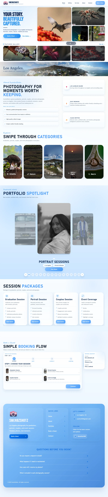

The goal
Create a stronger online presence that puts the photography first and gives prospective clients a clear path from discovery to inquiry.
A photography portfolio that helps Los Angeles clients explore the work, understand session options, and move into a guided booking flow.

Create a stronger online presence that puts the photography first and gives prospective clients a clear path from discovery to inquiry.
Responsive galleries, service packages, and a step-by-step booking flow make the site easy to explore on desktop and mobile.
Website design, frontend development, content organization, analytics setup, deployment, and revisions based on client feedback.